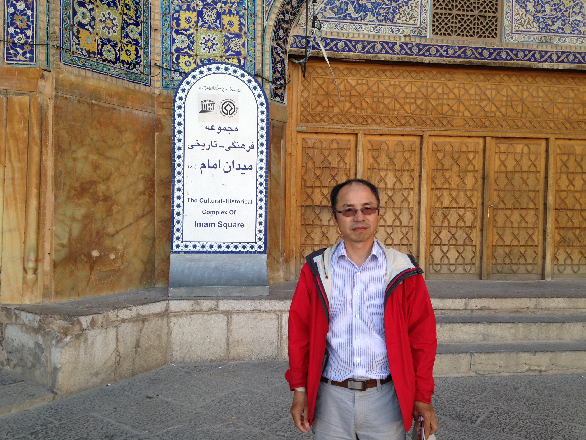

The Instructor

Dr. Liangren Zhang earned his Bachelor degree in 1991 in Chinese archaeology from Peking University,
after which he joined the Institute of Archaeology, Chinese Academy of Social Sciences,
and began his journey in excavation and research on Bronze Age archaeology in China. Since 2000,
he began to study Russian archaeology at Department of Art History,
University of California at Los Angeles.
In the recent years he has been focusing his research on prehistoric cultures of northwestern China
and southern Siberia. He is currently directing an international research project of prehistoric
metallurgy of Xinjiang, joint field projects in Altai Krai, and northeastern Iran.
Apart from archaeological work, he has been teaching Chinese art history at USC,
Northwest University, and Nanjing University, and published a few art history papers,
including “Chinese lacquers from Begram: date and provenance”
[International Journal of Asian Studies 8.1(2011)],
and “Kang Sehwang’s Scenes of Puan Prefecture：describing actual
landscape through literati ideals” [Arts Asiatiques 65 (2011)].